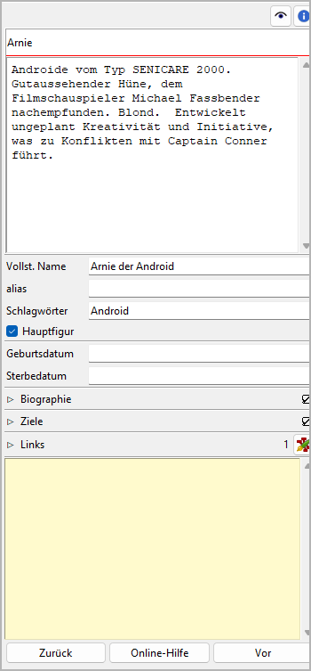

Figureneigenschaften
Die Ansicht der Figureneigenschaften öffnet sich im rechten Fenster, wenn Sie eine Figur auswählen.
Titel und Beschreibung
Titel und Beschreibung werden als beschreibbare „Karteikarte“ dargestellt.
Die Bearbeitung des Titels können Sie mit der Eingabetaste beenden. Änderungen an der Beschreibung werden übernommen, sobald mit der Maus irgendwo außerhalb des Texteingabefelds geklickt wird.
Vollst. Name
Der Titel der Figur, wie er auf der Karteikarte steht, dient an verschiedenen Stellen im Programm als Kurzname. Den vollständigen Namen können Sie hier gesondert eingeben. Die Bearbeitung können Sie mit der Eingabetaste beenden.
alias
Dieses Eingabefeld ist für alternative Namen. Die Bearbeitung können Sie mit der Eingabetaste beenden.
Schlagwörter
Schlagwörter sind ein frei benutzbares Werkzeug, um Figuren in der Baumansicht zu kennzeichnen. Schlagwörter müssen nicht anderswo definiert werden, sie werden einfach, durch Semikolons getrennt, ins Eingabefeld eingetragen. Die Bearbeitung können Sie mit der Eingabetaste beenden.
Vorsicht
Achten Sie auf eine einheitliche Schreibweise, falls Sie Schlagwörter mehrmals verwenden wollen.
Hinweis
Das Zim-Plugin kann Schlagwörter übernehmen, wenn es für die Figur eine neue Wiki-Seite erzeugt. Damit erhält man eine leistungsfähige Navigationshilfe.
Hauptfigur
Mit dem Hauptfigur-Auswahlfeld können Sie den Status der Figur ändern.
Bemerkung
Der Figurenstatus dient nur zur visuellen Unterscheidung. Er hat keine Auswirkung auf die Programmfunktion. Sie können ihn einsetzen, um Perspektivfiguren oder Figuren mit eigener Plotlinie zu kennzeichnen.
Geburtsdatum und Sterbedatum
Format: JJJJ-MM-TT, entsprechend ISO 8601.
Die Bearbeitung von Geburts- und Sterbedatum können Sie mit der Eingabetaste beenden.
Feld 1
Dieses Fenster öffnen oder schließen Sie mit Klick auf den Titel.
Änderungen im Texteingabefeld werden übernommen, wenn mit der Maus irgendwo außerhalb des Texteingabefelds geklickt wird.
Der voreingestellte Bezeichner ist „Biographie“. Sie können ihn bei Bedarf in den Bucheigenschaften ändern.
Feld 2
Dieses Fenster öffnen oder schließen Sie mit Klick auf den Titel.
Änderungen im Texteingabefeld werden übernommen, wenn mit der Maus irgendwo außerhalb des Texteingabefelds geklickt wird.
Der voreingestellte Bezeichner ist „Ziele“. Sie können ihn bei Bedarf in den Bucheigenschaften ändern.
Links
Dieses Fenster öffnen oder schließen Sie mit Klick auf den Titel.

Das ist eine Liste für Links zu Bildern und Recherche-Dokumenten.
Obwohl novelibre Daten zu Figuren, Schauplätzen und Gegenständen verwalten kann, ist es nicht die richtige Anwendung für umfangreichen Weltenbau. Dafür sollte man leistungsfähigere Softwareprogramme verwenden, zum Beispiel Zim Desktop Wiki. Dazu kann novelibre Hyperlinks zu den Textdateien erzeugen, welche Sie schnell zu den richtigen Stellen im Wiki führen.
Oder Sie haben einige Bilder gesammelt, die Sie beim Schreiben inspirieren. Dann erzeugen Sie einfach Links zu diesen Bildern und lassen Sie novelibre diese mit Ihrem System-Bildbetrachter öffnen.
Tipp
Wenn Sie mehrere Bilder z.B. zu einer Figur in einem Ordner gesammelt haben, den Ihr Standard-Bildbetrachter durchsuchen kann, ist ein einziger Link auf eines dieser Bilder ausreichend.
Die Links werden in einer Liste angezeigt, und zwar in der Reihenfolge der Eingabe.
- Link hinzufügen
Wenn Sie auf
 klicken, öffnet sich ein Dateiauswahldialog.
Die ausgewählte Datei wird der Linkliste hinzugefügt.
klicken, öffnet sich ein Dateiauswahldialog.
Die ausgewählte Datei wird der Linkliste hinzugefügt.Hinweis
Der Dialog zeigt zunächst nur Bilddateien. Für andere Dateitypen ändern Sie die Auswahl in der unteren rechten Ecke.

- Link entfernen
Wenn Sie auf
 klicken oder die
klicken oder die Entf-Taste drücken, wird der ausgewählte Link von der Liste entfernt.- Link öffnen
Wenn Sie auf einen Link doppelklicken, oder auf klicken, Wird die Datei, auf die der Link verweist, mit der Standardanwendung für ihren Typ geöffnet.
Hinweis
Falls Sie bestimmte verlinkte Dateien mit einer anderen Anwendung als der System-Standardanwendung öffnen wollen, können Sie eine „Programmstarter“-Einstellung vornehmen. Dafür erzeugen Sie einfach eine Textdatei namens launchers.ini im Verzeichnis
.novx/config(wo alle Konfigurationsdateien liegen). Hier in können Sie Erweiterungen Anwendungsprogramme zuordnen.Zim Desktop-Wiki-Seiten sind ein Sonderfall. Dafür ordnen Sie die .zim-Erweiterung dem Zim-Programm zu.
Dieses Beispiel zeigt eine Einstellung, die novelibre Textdateien mit der Zim Desktop Wiki-anwendung öffnen lässt, statt mit dem Standard-Texteditor:
[SETTINGS] .zim = C:/Program Dateis (x86)/Zim Desktop Wiki/zim.exe

„Haftmerker“
Der gelbe Texteingabebereich ist für Notizen. Änderungen werden übernommen, wenn mit der Maus irgendwo außerhalb des Texteingabefelds geklickt wird.
Wenn der „Haftmerker“ einer Figur Text enthält, erscheint in the Baumansicht ein „N“ als Hinweis.